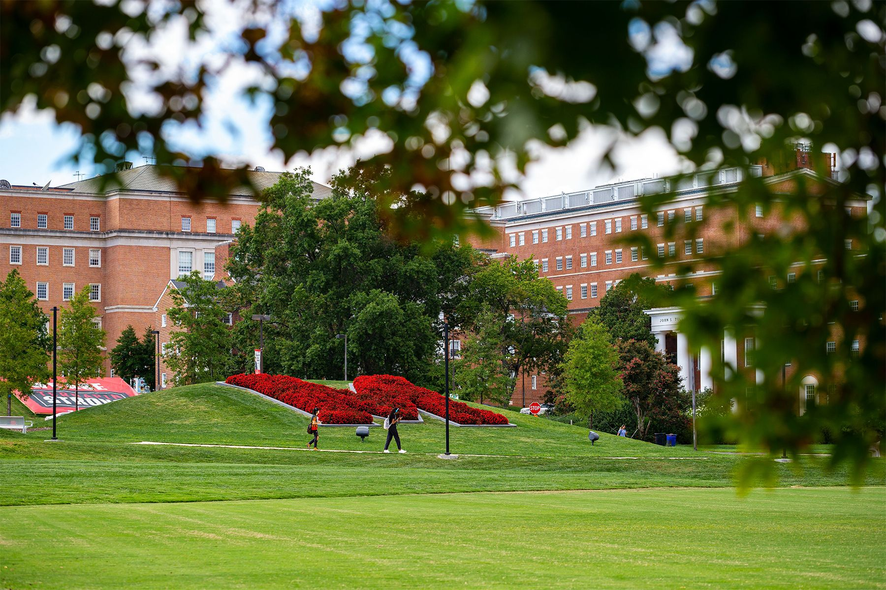

The University of Maryland Graduate School supports more than 10,000 graduate students across 200+ programs. Your research, your ambitions, your future — starts here.
The University of Maryland is located just steps from the US capitol of Washington, DC — a global center of science, politics, business, and culture. This prime location gives students unparalleled access to national research and policy institutions, performing and visual arts, and national and international decision makers.

Maryland is a Top 20 public research university with a vibrant graduate community, world-class faculty, and unmatched access to federal agencies, national labs, and industry partners in the DC-Baltimore corridor. Wherever your research takes you, Maryland puts you at the center of it.

Maryland's Grand Challenges Graduate Communities bring together doctoral students across disciplines to tackle the defining problems of our time — from climate change and public health to AI ethics and social equity. Work alongside peers and faculty who share your commitment to impact.
Graduate degree programs
Graduate students enrolled
Annual research expenditures

The 2026 fellowship cycle saw a 22 percent increase in awards, reflecting the university's commitment to graduate student support.

Forty-two doctoral students across twelve departments join the latest cohort, focusing on climate resilience and energy transition.

The fellowships provide full tuition coverage and a research stipend for students pursuing graduate work in STEM fields critical to national security.
Maryland didn't just give me a degree — it gave me the network, the resources, and the confidence to tackle problems that actually matter.
Dr. Kwame Asante, Ph.D. '22
Postdoctoral Fellow, National Institutes of Health

The Graduate School
2123 Lee Building